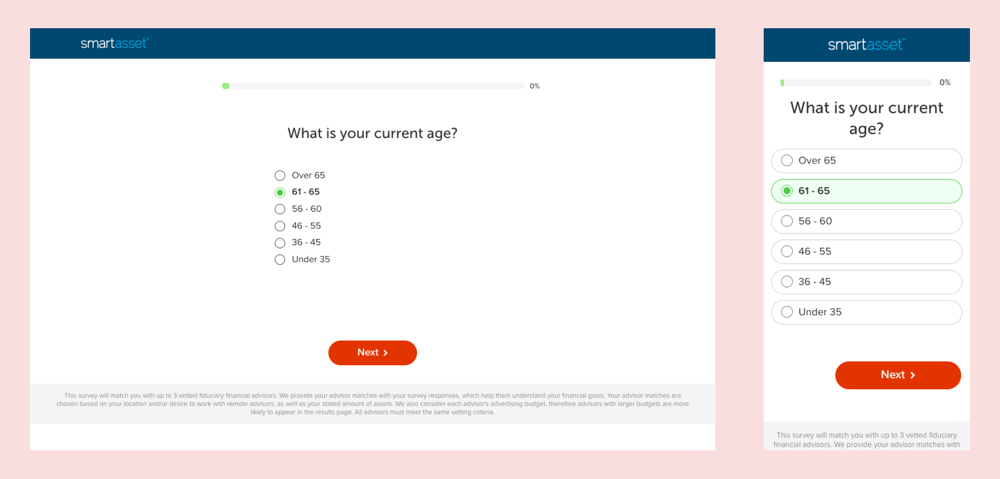
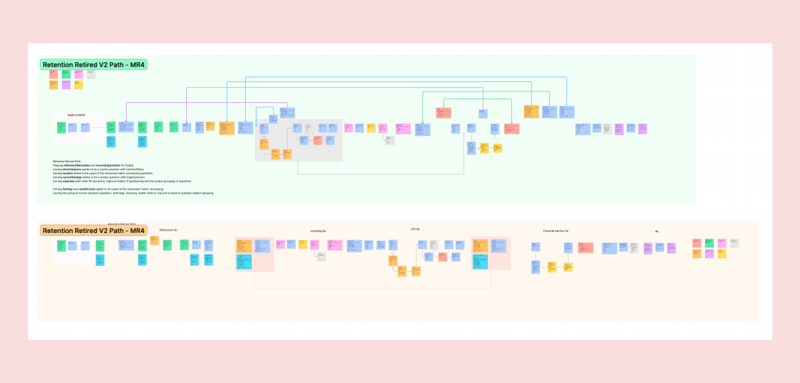

Optimizing the Conversion Rate
Improving the CVR of SmartAsset’s Matching Service by 95% through research-informed A/B testing
Project Timeline: 52+ weeks
My Role: UX Researcher & Front-End Developer
Team: Julia, Evan, Michael, Sarah, and Markus
Tools: SurveyMonkey, Google Surveys, UserTesting, Optimizely, Figma
SmartAsset is the leading marketplace that connects consumers with financial advisors. Before 2021, our 25-30 panel questionnaire (aka "the funnel") attracted over 30,000 consumers each month, resulting in matching with up to 3 advisors and an average conversion rate (CVR) of 2.9%. However, the substantial drop-off rate within the funnel indicated a clear opportunity for enhancement. Consequently, the Conversion Rate Optimization (CRO) team was tasked with improving the CVR of the funnel experience.
Goal: Improve CVR by 100% through ongoing A/B testing of SmartAsset’s Matching Service funnel
I was responsible for all research conducted for this project. I utilized a two-pronged approach to gain a comprehensive understanding of our user base and evaluate the usability of the current funnel experience. By combining these research methods, I was able to gather valuable insights that would guide our efforts in optimizing the user experience and enhancing the funnel's performance. The full research plan including the survey questions and usability testing tasks for the entire process can be found here.
A 12-question email survey was sent out to all validated consumers to better understand the funnel audience.
A task-based usability testing session was completed to identify the key pain points associated with the current funnel experience.
After collecting all the feedback, I proceeded to categorize the qualitative data in order to gain a deeper understanding of the funnel audience. This involved identifying recurring themes and patterns related to their motivations, goals, and concerns. Furthermore, I assessed and prioritized key usability issues based on their severity and impact.
During the research phase, I identified two distinct user segments: the "Pre-Retiree" and the "Getting My Bearings" groups. While both segments were in search of financial guidance and support, their motivations varied significantly. Notably, only the "Pre-Retiree" segment met the qualifications to work with a financial advisor, which left the "Getting My Bearings" segment with limited options. This discovery indicated a potential product opportunity that we could explore further.


A number of UX and UI issues were identified during the usability testing phase. The primary issues can be found below:
The previously stated insights influenced a number of successful A/B tests in Optimizely including, but not limited to, the following:
Success! The CRO initiative saw a cumulative 95% increase in conversion in 2021, resulting in a new baseline CVR of 5.5%.
In addition, the insights gathered during this project have already informed the direction of the product roadmap for 2022 and beyond, with a number of “overhauls” to the current funnel experience scheduled for upcoming sprints including the implementation of branching, new question types (select all, ranking, “other” optionality, etc.), evaluating the matching algorithm to achieve “best fit matches”, and the development of the "getting my bearings" experience.
The optimization of the funnel has consistently been a top priority, guided by research insights that have shaped our testing concepts since 2021. Our most recent findings have highlighted three key areas for improvement:
We conducted a highly successful test aimed at improving the accessibility of the funnel experience. This test involved expanding clickable areas to make them more user-friendly, providing additional visual feedback for CTAs on mobile devices, and updating the overall branding with a more accessible color palette. These changes greatly enhanced the accessibility of the funnel experience and resulted in significant positive outcomes for the CRO team.
We also conducted a significant test involving the reordering of our funnel. This test aimed to better manage user expectations by exploring a more logical question order, where similar questions were grouped together. This approach laid the groundwork for future funnel segmentation.
